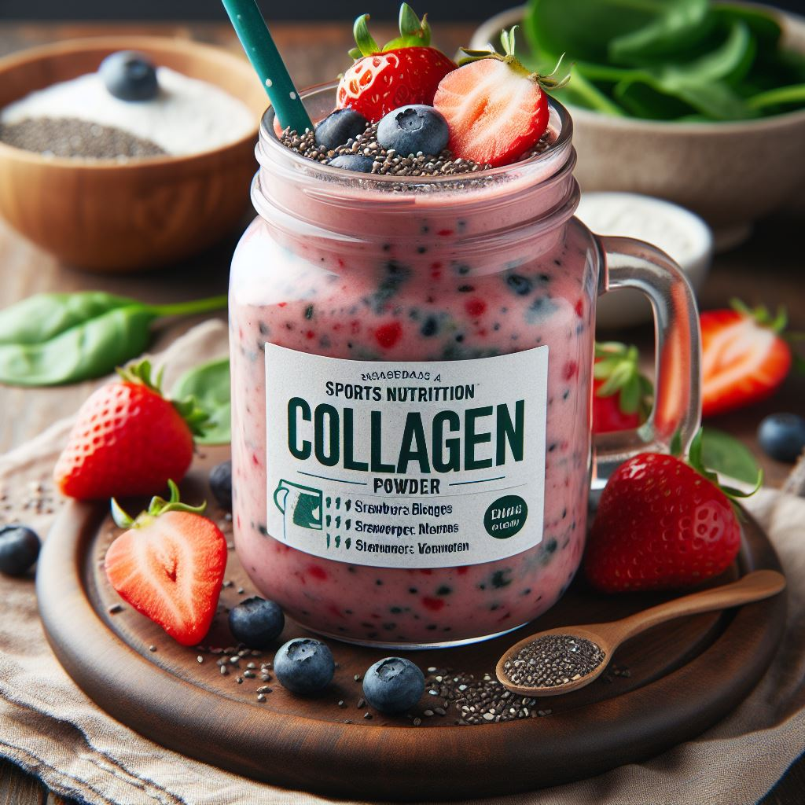

Коллаген
Коллаген — это нитевидный белок, который составляет основу соединительной ткани в нашем организме. Он играет ключевую роль в поддержании здоровья кожи, суставов, костей, сухожилий, волос, ногтей и даже зубов. Вот некоторые важные факты о коллагене:
1) Функции коллагена:
- Поддержка кожи: Коллаген обеспечивает упругость, эластичность и молодой вид кожи.
- Здоровье суставов: Он укрепляет хрящи и делает суставы более гибкими и прочными.
- Укрепление костей и ногтей: Коллаген способствует здоровью костей и укреплению ногтей.
- Поддержка волос: Он улучшает состояние волос и способствует их росту.
2) Типы коллагена:
- Тип I: Самый распространенный тип, составляющий около 90% всего коллагена в организме. Он формирует кожу, кости, сухожилия, зубы и кровеносные сосуды.
- Тип II: Присутствует в хрящевой ткани, поддерживая здоровье суставов.
- Тип III: Участвует в формировании мышц, внутренних органов и артерий.
- Тип IV: Образует базальные мембраны, связывая дерму и эпидермис.
3) Принимать коллаген:
- Принимайте коллаген за 30 минут до еды, запивая водой или разводя в воде, если это порошок.
- Минимальный курс — 1 месяц, но в случае лечения этот срок может быть увеличен до 3–6 месяцев.
Важно! Если вы планируете включить коллаген в свой рацион, обязательно проконсультируйтесь с врачом и тренером, чтобы выбрать подходящий продукт и дозировку. Помните, что индивидуальные потребности могут различаться, и важно следовать рекомендациям специалистов.
Теперь вы знаете больше о коллагене! Если вас заинтересовал данный продукт, переходите по кнопке "Просмотр продукции" и подбирайте товар для себя!